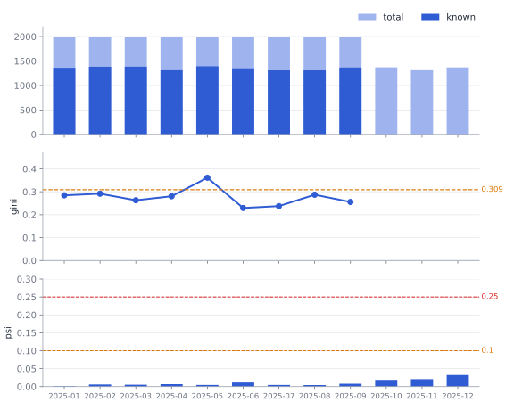
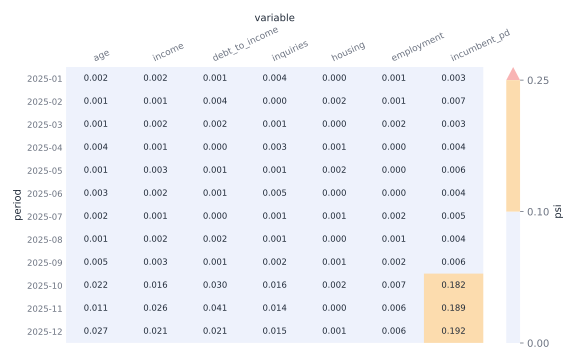

10. Production and monitoring#
From January 2025 the new scorecard decides the applications. This chapter saves the binning for the scoring system, scores a year of new applications, and follows the model month by month until a shift in the applicants shows up; Model monitoring and Population stability index describe the measures.
Code from the previous chapters
>>> import numpy as np
>>> import pandas as pd
>>> from kivi.datasets import make_applications
>>> from kivi.reject_inference import fuzzy_augmentation
>>> from kivi.selection import logistic_regression, stepwise
>>> from kivi.spec import fit_spec
>>> applications = make_applications(n_applicants=40000, rng=0)
>>> months = pd.period_range("2024-01", periods=12, freq="M")
>>> applications["month"] = months[np.arange(40000) * 12 // 40000]
>>> eligible = applications[~applications["policy_decline"]]
>>> accepts = eligible[eligible["approved"]]
>>> development = accepts[accepts["month"] <= "2024-09"]
>>> validation = accepts[accepts["month"] >= "2024-10"]
>>> rejects = eligible[~eligible["approved"] & (eligible["month"] <= "2024-09")]
>>> features = ["age", "income", "debt_to_income", "inquiries", "housing", "employment", "incumbent_pd"]
>>> method = {column: "monotonic" for column in ["age", "income", "debt_to_income", "incumbent_pd"]}
>>> method["employment"] = "chimerge"
>>> bins = {"inquiries": [-np.inf, 0, 1, 2, np.inf], "incumbent_pd": 8}
>>> spec = fit_spec(development[features], development["target"], method=method, bins=bins)
>>> selected = stepwise(spec.woe_transform(development), development["target"])
>>> accepts_model = logistic_regression(spec.woe_transform(development)[selected], development["target"])
>>> def predict(model, frame):
... slopes = model["coef"].drop("intercept")
... log_odds = model.loc["intercept", "coef"] + spec.woe_transform(frame)[slopes.index] @ slopes
... return 1 / (1 + np.exp(-log_odds))
>>> inferred = fuzzy_augmentation(predict(accepts_model, rejects), factor=1.5)
>>> frame = pd.concat([development[features], rejects.loc[inferred.index, features]])
>>> target = pd.concat([development["target"], inferred["target"]])
>>> weights = pd.concat([pd.Series(1.0, index=development.index), inferred["weight"]])
>>> model = logistic_regression(spec.woe_transform(frame)[selected], target, weights=weights)
>>> from kivi.calibration import master_scale
>>> master = master_scale(np.geomspace(0.02, 0.32, 5), labels=list("ABCDE"))
>>> cutoff = master.loc["D", "upper"]
Save the binning#
The scoring system must group and encode each application exactly as the development sample was. select() keeps the characteristics of the model, and to_json() writes their edges, groups and WOE tables as versioned JSON; see Binning specifications. from_json() reads it back into an equal specification:
>>> from kivi.spec import BinningSpec
>>> production = spec.select(selected)
>>> text = production.to_json(indent=2)
>>> restored = BinningSpec.from_json(text)
>>> restored == production
True
>>> restored.groups["employment"]
{'permanent': 'permanent', 'self_employed': 'self_employed, temporary', 'temporary': 'self_employed, temporary'}
The JSON is stored with the coefficients and the scale of The scorecard, and next to it the feature specification of Transaction features, which computes the transaction features of every new application for the next scorecard. The examples below score with restored, as the scoring system would:
>>> def score_pd(frame):
... slopes = model["coef"].drop("intercept")
... log_odds = model.loc["intercept", "coef"] + restored.woe_transform(frame)[slopes.index] @ slopes
... return 1 / (1 + np.exp(-log_odds))
Score a year of applications#
The applications of 2025 come from a new sample of the same generator, 2,000 a month. In October a competitor launches a cheaper loan, and most applicants with a low risk go there instead: from then on, 70% of the applicants with a vendor PD below 7% no longer apply. The policy rules still decline some applications, and the new cut-off decides the others:
>>> new = make_applications(n_applicants=24000, rng=1)
>>> new["month"] = pd.period_range("2025-01", periods=12, freq="M")[np.arange(24000) * 12 // 24000]
>>> rng = np.random.default_rng(2)
>>> lost = (new["month"] >= "2025-10") & (new["incumbent_pd"] < 0.07) & (rng.random(24000) < 0.7)
>>> stream = new[~lost & ~new["policy_decline"]]
>>> stream_pd = score_pd(stream)
>>> approved = stream_pd <= cutoff
At the end of 2025, the outcomes of the loans granted up to September are known, and the later ones are not. Unknown outcomes are passed as missing values.
Follow the model month by month#
monitoring_table() gives one row per month: the applications, the known outcomes and their default rate, the AUC, Gini and KS among the known outcomes, and the PSI of the PDs against the eligible applicants of the development months:
>>> from kivi.monitoring import monitoring_table, stability_table
>>> outcome = stream["target"].where(approved & (stream["month"] <= "2025-09"))
>>> reference = eligible[eligible["month"] <= "2024-09"]
>>> report = monitoring_table(stream_pd, stream["month"], outcome, reference_score=score_pd(reference))
>>> report.round(3)
total known event event_rate auc gini ks psi
period
2025-01 1852 1406 143 0.102 0.697 0.395 0.329 0.002
2025-02 1837 1406 143 0.102 0.678 0.355 0.290 0.006
2025-03 1858 1452 153 0.105 0.664 0.329 0.269 0.004
2025-04 1857 1406 150 0.107 0.667 0.334 0.282 0.007
2025-05 1865 1385 131 0.095 0.669 0.339 0.273 0.006
2025-06 1846 1377 151 0.110 0.644 0.288 0.211 0.004
2025-07 1863 1387 140 0.101 0.651 0.301 0.270 0.005
2025-08 1848 1374 133 0.097 0.703 0.405 0.333 0.004
2025-09 1874 1406 176 0.125 0.659 0.318 0.243 0.012
2025-10 1460 0 0 NaN NaN NaN NaN 0.139
2025-11 1483 0 0 NaN NaN NaN NaN 0.150
2025-12 1487 0 0 NaN NaN NaN NaN 0.134

The monitoring report of 2025. The Gini of the known outcomes scatters around its development value; from October, the PSI of the PDs rises above 0.1.#
Until September the PSI stays below 0.02, and the Gini of the known outcomes scatters around its value on the development sample:
>>> from kivi.metrics import gini
>>> print(f"{gini(score_pd(development), development['target']):.3f}")
0.353
The approved applicants of 2025 were chosen by the new cut-off rather than the vendor’s, so their Gini is not expected to match exactly; a lasting fall would be the warning sign. From October, fewer applications arrive and the PSI rises to between 0.13 and 0.15: above 0.1, the usual threshold for a closer look, though below 0.25.
Find the cause#
stability_table() gives the PSI of every characteristic in every month, on the groups of the specification:
>>> stability = stability_table(
... restored.cut(stream), stream["month"], reference_groups=restored.cut(reference)
... )
>>> stability.round(3).tail(4).T
period 2025-09 2025-10 2025-11 2025-12
variable
age 0.005 0.022 0.011 0.027
income 0.003 0.016 0.026 0.021
debt_to_income 0.001 0.030 0.041 0.021
inquiries 0.002 0.016 0.014 0.015
housing 0.001 0.002 0.000 0.001
employment 0.002 0.007 0.006 0.006
incumbent_pd 0.006 0.182 0.189 0.192

PSI of each characteristic by month. Only incumbent_pd moves, from October.#
Only the vendor’s PD has shifted. psi_table() shows which of its bins changed in December, and csi_table() how much each change moves the average score, with the points of The scorecard:
>>> from kivi.scorecard import points_table
>>> from kivi.stability import csi_table, psi_table
>>> december = stream[stream["month"] == "2025-12"]
>>> before = restored.cut(reference)["incumbent_pd"]
>>> after = restored.cut(december)["incumbent_pd"]
>>> psi_table(before, after).round(3)
reference current reference_share current_share psi
bin
(-inf, 0.0304] 1017 14 0.037 0.009 0.037
(0.0304, 0.0377] 1008 25 0.036 0.017 0.015
(0.0377, 0.0541] 3051 56 0.110 0.038 0.077
(0.0541, 0.0793] 5038 189 0.181 0.127 0.019
(0.0793, 0.0961] 3033 222 0.109 0.149 0.013
(0.0961, 0.109] 2029 150 0.073 0.101 0.009
(0.109, 0.123] 2025 130 0.073 0.087 0.003
(0.123, inf] 10571 701 0.381 0.471 0.019
>>> coefficients = model["coef"].drop("intercept")
>>> card = points_table(
... restored.tables, coefficients, model.loc["intercept", "coef"], pdo=20, base_score=600, base_odds=50
... )
>>> shift = csi_table(before, after, card.loc[["incumbent_pd"]])
>>> print(f"{shift['csi'].sum():.2f}")
-5.89
The three lowest bins, the applicants with a vendor PD below 5.4%, lost about two thirds of their share, and through the vendor’s PD alone the average score of December is 5.9 points lower. The model is not wrong: it scores the applicants it now sees. The shift is a change of the business, which the lender takes up with pricing and marketing rather than by refitting the scorecard. The outcomes of the last quarter will show whether the PDs still hold.